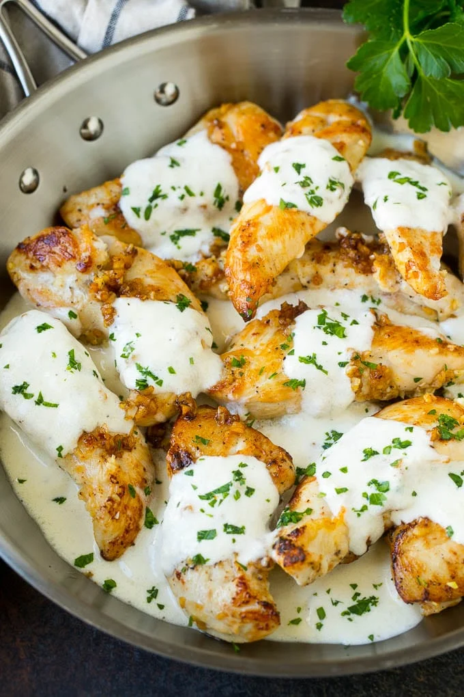

Creamy Garlic Chicken

Crispy, golden chicken on the outside → tender and succulent on the inside → lightly simmered in a creamy sauce
with so much flavour. The combination of your dreams! Chicken breasts tend to have a bad reputation for being
too dry, chalky or hard to swallow. However, this recipe yields perfectly juicy breasts lightly floured and pan
fried.
For the Chicken
- 3 large boneless and skinless chicken breasts halved horizontally to make 4
- 4 tablespoons flour (all purpose or plain)
- 4 tablespoons finely grated fresh Parmesan cheese
- 2 teaspoon salt
- 1 teaspoon garlic powder
- 1/2 teaspoon Black cracked pepper
For the Sauce
- 5 tablespoons olive oil
- 2 tablespoons butter
- 1 small onion finely chopped
- 1 whole head of garlic peeled and divided into 10-12 cloves
- 1 1/4 cup chicken broth (stock
- 1 1/4 cup half and half or heavy cream (or evaporated milk)
- 1/2 cup finely grated fresh Parmesan cheese
- 2 tablespoons fresh parsley, to serve
Instructions
- Season the chicken with salt, garlic powder and pepper.
- In a shallow bowl, combine the flour, parmesan cheese. Dredge chicken in the flour mixture; shake off excess.
- Heat 2 tablespoons of oil and 1 tablespoon butter in a large skillet over medium-high heat.
Swirl pan to coat evenly.
- Fry 2-3 chicken breasts until golden on each side, cooked through and no longer pink
(about 4-5 minutes each side, depending on the thickness of your chicken).
Transfer to a warm plate. Set aside.
- Wipe pan over with a sheet of paper towel. Repeat with remaining oil, butter and chicken breasts.
When cooked, transfer the chicken onto the same plate.
- Reduce heat to medium. Sauté the onion in the remaining oil/juices in the pan until softened.
- Smash 6 whole cloves of garlic with the blunt edge of the back of a knife
- Add the remaining oil to the pan and heat through, mixing it through the onions. Sauté smashed
garlic cloves and whole garlic cloves until fragrant, about 2-3 minutes. Add the broth to deglaze
the pan. Scrape up any browned bits and let simmer and reduce to half, about 5 minutes.
- Reduce heat to medium-low. Pour in the cream. Bring the sauce to a gentle simmer for about 2-3 minutes,
combining all of the flavours together.
- Mix in the parmesan cheese. Continue cooking gently for about 2-3 minutes until cheese melts,
while stirring occasionally. Season with salt and pepper to your taste.
- Add the chicken back into the pan and let simmer for a further 2-3 minutes to
thicken the sauce to your liking. The chicken breast will soak up all of the delicious flavours.
- Garnish with parsley and a little black cracked pepper.
Serve over pasta, cauliflower mash, zucchini noodles, rice or mashed potatoes.
Return to Odin's Favorite Recipes